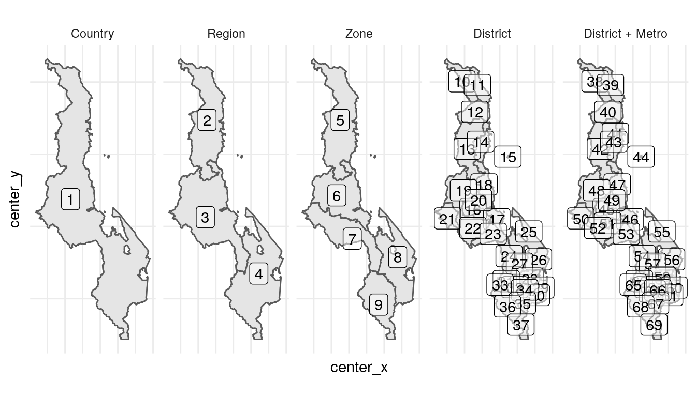

data-model.Rmdarea_levels contains metadata describing the levels in the area hierarchy for the country.area_hierarchy contains the nested hierarchy of area IDs at each level described in area_levels.area_boundaries defines the spatial boundaries for each area in area_hierarchy.The fields center_x and center_y define in area_hierarchy defines longitude/latitude coordinates within the area. This field is currently optional. The R package will construct these centers from the boundaries if they are not provided. They might wish to be provided for two reasons:
From a conceptual perspective, area_hierarchy and area_boundaries each have one record per area_id and it would make sense for them to be in a single table schema. They are separate schemas for convenience so that area_hierarchy can be saved as human-readable CSV file while area_boundaries is saved as .geojson format by default.
The figures below show example code for generating a typical plot from the Areas schemas:
area_hierarchy %>%
left_join(area_levels %>% select(area_level, area_level_label)) %>%
mutate(area_level_label = area_level_label %>% fct_reorder(area_level)) %>%
ggplot() +
geom_sf(data = . %>% left_join(area_boundaries) %>% st_as_sf()) +
geom_label(aes(center_x, center_y, label = area_sort_order), alpha = 0.5) +
facet_wrap(~area_level_label, nrow = 1) +
naomi:::th_map()
#> Joining, by = "area_level"
#> Joining, by = "area_id"
age_group_meta contains metadata definining a standardised set of age groups. This is containted in naomi::get_age_groups().population_agesex contains population estimates by area, sex, and five-year age group. Estimates are required at the highest level of the area hierarchy for all age groups from 0-4 through 80+.fertility contains age-specific fertility rate (ASFR) estimates by area.Time is identified as quarter_id defined as the number of calendar quarters since the year 1900 (inspired by DHS Century Month Code [CMC]): \[ \mathrm{quarter\_id} = (\mathrm{year} - 1900) * 4 + \mathrm{quarter}.\] The function interpolate_population_agesex() interpolates population estimates to specified quarter_ids.
naomi::get_age_groups()
#> age_group_id age_group_label age_group_start age_group_span
#> 1 1 0-4 0 5
#> 2 2 5-9 5 5
#> 3 3 10-14 10 5
#> 4 4 15-19 15 5
#> 5 5 20-24 20 5
#> 6 6 25-29 25 5
#> 7 7 30-34 30 5
#> 8 8 35-39 35 5
#> 9 9 40-44 40 5
#> 10 10 45-49 45 5
#> 11 11 50-54 50 5
#> 12 12 55-59 55 5
#> 13 13 60-64 60 5
#> 14 14 65-69 65 5
#> 15 15 70-74 70 5
#> 16 16 75-79 75 5
#> 17 17 80+ 80 Inf
#> 18 18 15-49 15 35
#> 19 19 15-64 15 50
#> 20 20 15+ 15 Inf
#> 21 21 50+ 50 Inf
#> 22 22 all ages 0 Inf
#> 23 23 0-64 0 65
#> 24 24 0-14 0 15
#> 25 25 15-24 15 10
#> 26 26 25-34 25 10
#> 27 27 35-49 35 15
#> 28 28 50-64 50 15
#> 29 29 65+ 65 Inf
#> age_group_sort_order
#> 1 13
#> 2 14
#> 3 15
#> 4 16
#> 5 17
#> 6 18
#> 7 19
#> 8 20
#> 9 21
#> 10 22
#> 11 23
#> 12 24
#> 13 25
#> 14 26
#> 15 27
#> 16 28
#> 17 29
#> 18 1
#> 19 2
#> 20 3
#> 21 4
#> 22 5
#> 23 6
#> 24 7
#> 25 8
#> 26 9
#> 27 10
#> 28 11
#> 29 12survey_meta contains meta data about each household survey.survey_hiv_indicators is analytical table with area-level indicators. This is the table used as inputs to Naomi. Indicators are calculated for all stratifications of area/age/sex. Typically the most granular stratification would be selected for model input.The remaining tables are harmonized survey microdatasets used for calculating the indicators dataset.
The table survey_hiv_indicators should also contain all survey HIV prevalence inputs required for Spectrum and EPP. It should be further extended to also calculate other indicators required by Spectrum, e.g. HIV testing outcomes for shiny90, proportion ever had sex, breastfeeding duration, and fertlity by HIV status.
art_number reports the number currently receiving ART at the end of each quarter by area.anc_testing reports antenatal clinic (ANC) attendees and outcomes during the quarter.The model is currently specified to accept ART numbers by age 0-14 (age_group_id = 24, 0-14, 0, 15, 7) and age 15+ (age_group_id = 20) either both sexes together (sex = "both") or by sex (sex = "female"/sex = "male"). Possible extension may allow ART inputs by finer stratification.
For art_number it is important to distinguish between zero persons receiving ART (e.g. no ART available in the area) versus missing data about the number on ART in an area. Current specification requires a value current_art = 0 for an area with no ART whereas no entry for a given area will be interpreted as missing data. This could be revised, for example to require explicit input for all areas with a code for missing data.
The anc_testing data is currently input for all ages of pregnant women aggregated, that is age_group_id = 18 for age 15-49.